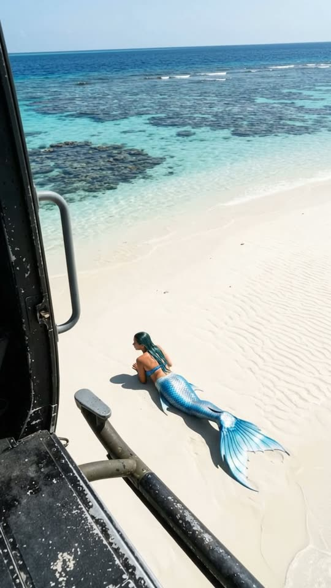
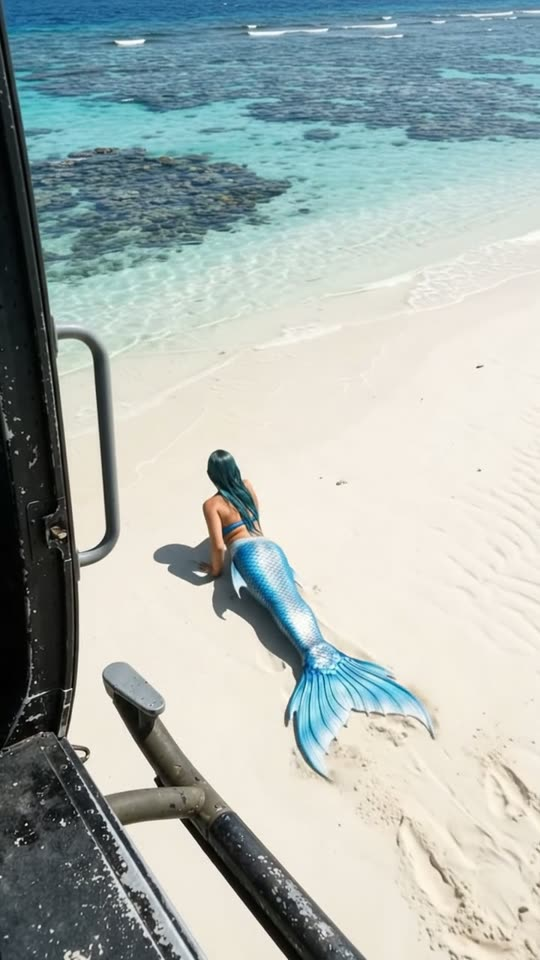
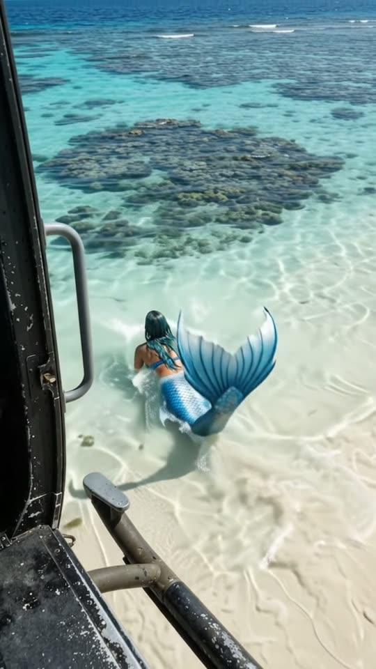
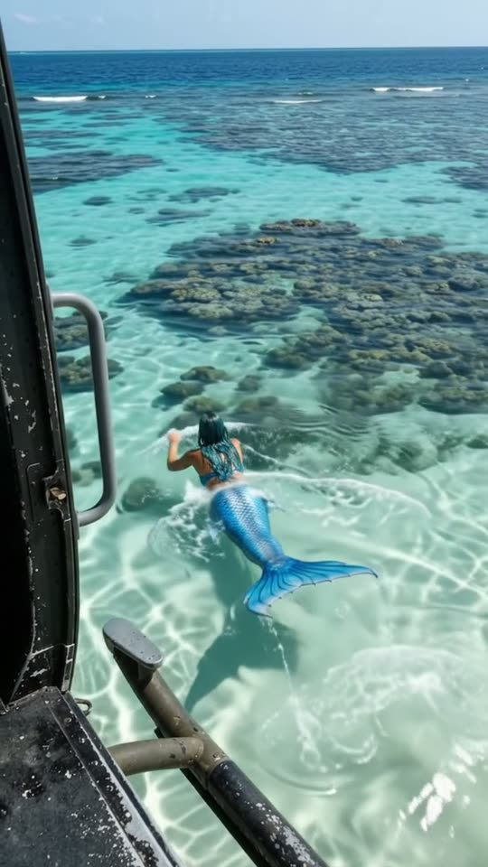

Free prompt pack
One sandbar.One tail.
From the open door of a hovering helicopter: something on the white sand. Arms first, the tail dragging behind, a furrow to the water's edge, a flick of the fin and she's gone into the turquoise. One still image and one prompt, in one take.
Both prompts, in the order I ran them. Follow the pearl on each one until the water opens. Tap the sea for ripples.
The first frame
Low over the sand, the door in frame. This image is frame one: from the open door of a helicopter, the door frame and a grab handle on the left, and a mermaid lying on a white sandbar a few metres from turquoise water.
Watch out
Hover low. The original starts so high she's a dot and needs a zoom and three shots; at 20 m she reads in frame one and the take never cuts.

The prompt 143 words
Real photo taken from the open side door of a helicopter hovering low over a tropical sandbar, looking down at a steep angle. The black door frame runs down the left edge and a grey metal grab handle crosses the bottom left. Below, smooth white sand rippled by the wind, and on it, seen from above and behind, a mermaid lying on her stomach: a young woman with long wet teal-blue hair and tanned shoulders in a blue scaled top, her body ending at the hips in a long fish tail covered in iridescent blue and silver scales, with a wide, sheer blue fan-shaped fin. Ahead of her, a few metres away, the sand meets clear turquoise water over dark coral patches, and beyond, the reef and the open blue sea to the horizon. Bright midday sun, sharp shadows, real detail, natural colour.
To the water
Ten seconds from the helicopter door. Add the image as the reference, set 10 s, 9:16, 720p and audio on, and paste the prompt whole.
- 0–2.5 sarms pulling, tail sweeping
- 2.5–5.5 sthe furrow reaches the edge
- 5.5–7.5 sinto the shallows, fin up
- 7.5–10 sgone, a shape under the water
Watch out
Describe the scales and the fin as real and close the door on magic: no glitter, no glow, no sparkles. That's what keeps her a creature and not a costume.
Fragments



The prompt 906 words
FORMAT Real handheld video filmed from the open side door of a hovering helicopter, seen as the finished exported video file: the full picture edge to edge, nothing on top of it. Whatever records the picture is never in frame. One continuous take in real time, no cuts. Vertical frame. The video runs at 24 fps. No frame is repeated. Real time, 1x speed, never slow motion. SCENE From a helicopter hovering low over a tropical sandbar, we look down at a mermaid lying on the white sand. She drags herself on her arms across the sand to the water's edge, slides into the clear turquoise shallows, flicks her tail once and disappears under the water, leaving rings of ripples and a furrow in the sand. She is already crawling in the first frame. The take ends on the ripples spreading where she went in. REFERENCE IMAGE Use it for the door frame and the grab handle, the sand, the mermaid, her hair, her top, her tail and its fin, the water, the coral, the reef and the light. Everything matches it exactly, zero drift, no smoothing. The movement is described below. THE MERMAID One mermaid, real flesh and real scales: a young woman with long wet teal-blue hair and tanned shoulders and arms, wearing a blue scaled top; at her hips her body becomes a long, heavy fish tail covered in iridescent blue and silver scales that catch the sun, ending in a wide, sheer blue fan-shaped fin. Seen from above and behind the whole time; her face is never turned to us. The same mermaid from the first frame to the last. No glitter, no glow, no sparkles. LOCATION MAP The helicopter hovers 20 m above the sand and 15 m behind her, looking down at 50 degrees. She lies in the middle of the sandbar, 6 m from the water's edge, heading straight toward it, which is up in the frame. The water's edge runs across the frame; beyond it, clear turquoise water over dark coral patches, then the reef and the open sea to the horizon. The door frame stays on the left edge and the grab handle across the bottom left. FIRST FRAME The black door frame along the left edge, x 0-10%; the grey grab handle crossing the bottom-left corner; the mermaid at x 35-62%, y 48-80%, seen from above and behind, mid-crawl, her arms reaching forward, her tail behind her with the fin fanned out on the sand; rippled white sand around her; the water's edge across the frame at y 34%; turquoise water and coral at y 12-34%; the horizon at y 10%. Instant read: a real mermaid crawling across a beach, seen from a helicopter. No delayed reveal. CAMERA Handheld at the open door of a hovering helicopter: the gentle sway and fine vibration of a helicopter in a hover, a slight follow of the mermaid. It stays in the helicopter, never zooms, never cuts, never jumps down to the sand, never goes underwater, never shows the helicopter from outside. ACTION TIMING 0–2.5 s — She pulls herself forward on her forearms, elbows bending, her tail sweeping slowly side to side behind her, sand spraying from under the fin, a wide furrow growing behind her. 2.5–5.5 s — She crawls faster, hair swinging, the fin dragging and leaving a fan-shaped track; she reaches the wet sand at the water's edge. 5.5–7.5 s — She pushes into the shallow water: her arms and shoulders slide in, small splashes, then her tail rises and the fin flicks once above the surface. 7.5–10 s — The fin slips under; through the clear water her dark shape glides away over the sand; rings of ripples spread over the surface where she went in, the furrow in the sand leading to them. Hold to the last frame. PHYSICS AND SCALE Real weight: she is about 2.2 m long from head to fin; every pull drags her heavy tail through the sand, which piles up at the sides of the furrow. The water splashes only where she touches it. The rotor wash ripples the water lightly and blows a little sand. One mermaid, one sandbar, one sea. Nothing morphs. NO FULL-FRAME EVENTS The water never fills the frame: the door frame and the grab handle stay on the left and the sand stays at the bottom in every frame. LIGHTING Bright tropical midday sun from high on the right: her sharp shadow on the sand, the scales flashing silver and blue, sparkles on the turquoise water. AUDIO No music, no score, no narration, no subtitles. The thump of the rotor and the whine of the turbine above us, wind at the open door, a faint swish of sand and one soft splash as she goes in. No words. LOOK Real handheld aerial footage from a helicopter door, seen as the finished exported file: natural colour, bright and clear, light compression, no film grain, no lens flare, no slow motion, never CGI, never a fantasy-film look. No camera app interface: no shutter button, no gallery thumbnail, no record button, no icons, no timer, no recording dot, no frame lines. POSITIVE LOCKS One mermaid, seen from above and behind. One sandbar, one sea. No people, no boats. No captions, no subtitles, no on-screen text, no watermark, no logos, nothing on top of the picture. ONE MERMAID. NO CUTS. NO ZOOM. NO SLOW MOTION. NO MUSIC.
Rule 01
Get closer, not zoomed
If the subject is a dot, move the camera down instead of zooming. A zoom in a single take is where the model cuts to a new shot.
Rule 02
Weight in the sand
Every pull of her arms drags a heavy tail and piles sand at the sides of the furrow. The track is what proves she's real.
Rule 03
Keep the door in frame
The door frame and the grab handle never leave the picture. They anchor the shot so the model has nothing to cut to.
That's the whole build
Now go findyour own siren.
If yours works, send it over. I read every DM and the good ones end up on the account.
@martiiifons